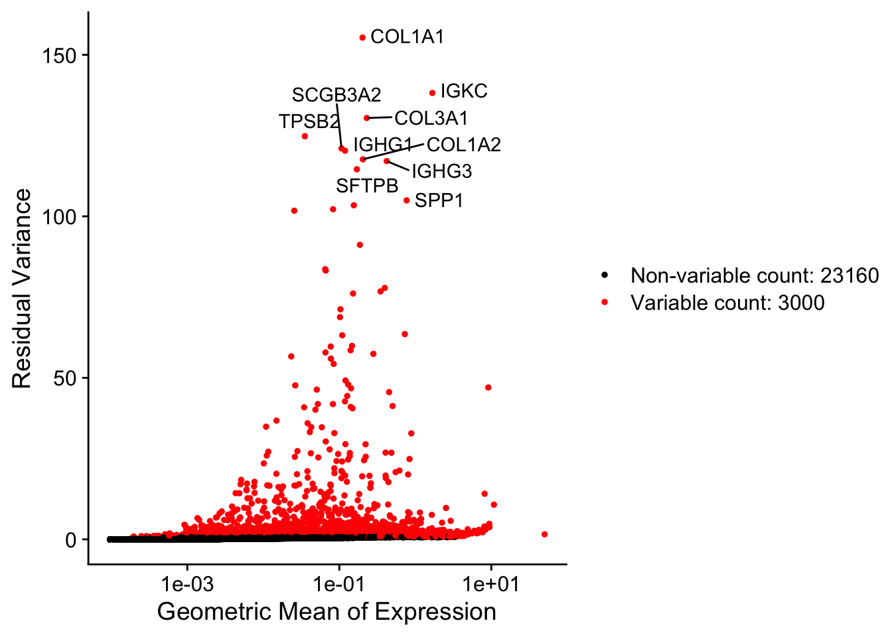
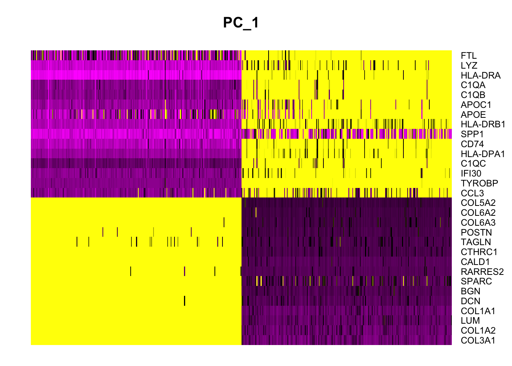
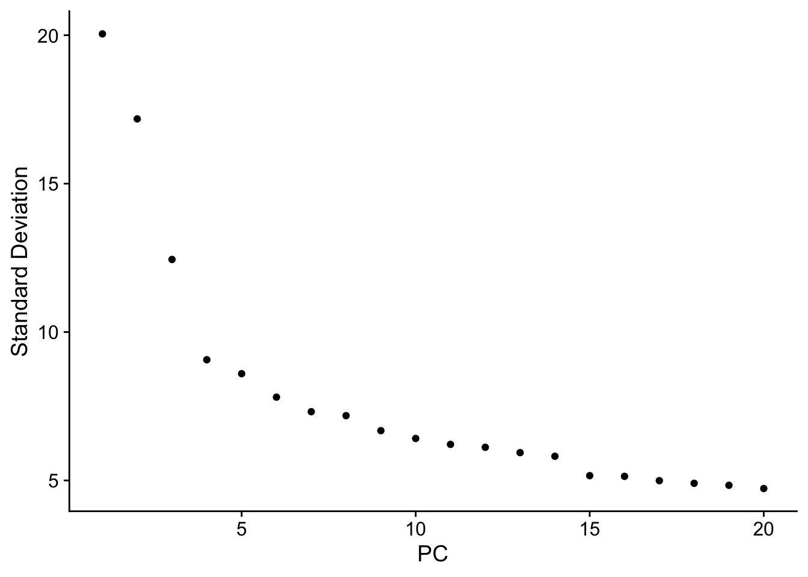
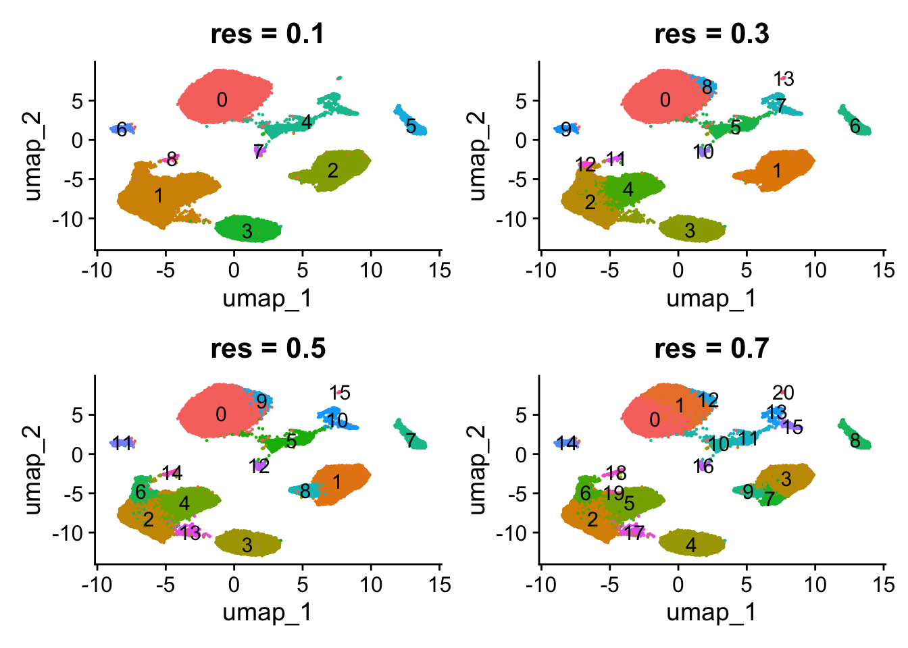
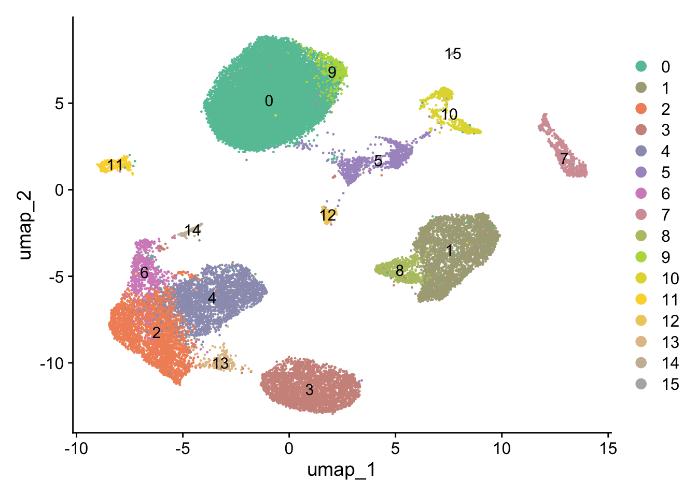

Code
library(tidyverse)
library(Seurat)
library(hdf5r)
library(patchwork)
library(RColorBrewer)library(tidyverse)
library(Seurat)
library(hdf5r)
library(patchwork)
library(RColorBrewer)I have already picked the top variable genes (n = 3000) during normalization
nsclc.seurat.obj_n <- SCTransform(nsclc.seurat.obj_f,
vars.to.regress = "percent.mt", verbose = FALSE,
conserve.memory = TRUE, variable.features.n = 3000)Identify the 10 most highly variable genes
top10 <- VariableFeatures(nsclc.seurat.obj_n) %>% head(10) # first 10 variable genes
top10 [1] "COL1A1" "IGKC" "COL3A1" "TPSB2" "SCGB3A2" "IGHG1" "COL1A2"
[8] "IGHG3" "SFTPB" "SPP1" length(VariableFeatures(nsclc.seurat.obj_n)) # how many kept[1] 3000LabelPoints(plot = VariableFeaturePlot(nsclc.seurat.obj_n), points = top10, repel = TRUE)
nsclc.seurat.obj_dr <- RunPCA(nsclc.seurat.obj_n,
features = VariableFeatures(object = nsclc.seurat.obj_n))
# visualize PCA results
print(nsclc.seurat.obj_dr[["pca"]], dims = 1:5, nfeatures = 10)PC_ 1
Positive: COL3A1, COL1A2, LUM, COL1A1, DCN, BGN, SPARC, RARRES2, CALD1, CTHRC1
Negative: FTL, LYZ, HLA-DRA, C1QA, C1QB, APOC1, APOE, HLA-DRB1, SPP1, CD74
PC_ 2
Positive: CCL5, GNLY, CD69, RPS27, HSP90AA1, GZMB, RPS12, RPS27A, RPL13, NKG7
Negative: FTL, APOE, APOC1, C1QA, LYZ, C1QB, FTH1, C1QC, SPP1, CCL3
PC_ 3
Positive: NAPSA, WFDC2, SLPI, SFTPB, IFI27, ELF3, CXCL17, SLC34A2, KRT18, PIGR
Negative: CCL5, GNLY, HSP90AA1, B2M, CD69, GZMB, NKG7, IL7R, IFNG, CXCR4
PC_ 4
Positive: CCL5, GNLY, NKG7, NAPSA, SFTPB, GZMB, CCL4, SCGB3A2, SLPI, SLC34A2
Negative: IGKC, BEX3, AZGP1, AKR1C2, HES6, STMN1, IGFBP2, NFIB, AKR1C1, RBP1
PC_ 5
Positive: APOE, FTL, GNLY, CCL5, APOC1, NKG7, CCL18, SPP1, GZMB, CTSD
Negative: HLA-DRA, HLA-DRB1, SFTPB, HLA-DPA1, HLA-DQA1, HLA-DPB1, S100B, NAPSA, SCGB3A2, CD74 DimHeatmap(nsclc.seurat.obj_dr, dims = 1, cells = 500, balanced = TRUE)
# determine dimensionality of the data
ElbowPlot(nsclc.seurat.obj_dr)
Finds cells with similar gene expression patterns (in PCA space)
nsclc.seurat.obj_dr <- FindNeighbors(nsclc.seurat.obj_dr, dims = 1:15)Groups cells into clusters based on the neighbor graph
nsclc.seurat.obj_dr <- FindClusters(nsclc.seurat.obj_dr, resolution = c(0.1, 0.3, 0.5, 0.7, 1))Modularity Optimizer version 1.3.0 by Ludo Waltman and Nees Jan van Eck
Number of nodes: 35917
Number of edges: 980118
Running Louvain algorithm...
Maximum modularity in 10 random starts: 0.9755
Number of communities: 9
Elapsed time: 4 seconds
Modularity Optimizer version 1.3.0 by Ludo Waltman and Nees Jan van Eck
Number of nodes: 35917
Number of edges: 980118
Running Louvain algorithm...
Maximum modularity in 10 random starts: 0.9359
Number of communities: 14
Elapsed time: 4 seconds
Modularity Optimizer version 1.3.0 by Ludo Waltman and Nees Jan van Eck
Number of nodes: 35917
Number of edges: 980118
Running Louvain algorithm...
Maximum modularity in 10 random starts: 0.9044
Number of communities: 16
Elapsed time: 4 seconds
Modularity Optimizer version 1.3.0 by Ludo Waltman and Nees Jan van Eck
Number of nodes: 35917
Number of edges: 980118
Running Louvain algorithm...
Maximum modularity in 10 random starts: 0.8818
Number of communities: 21
Elapsed time: 5 seconds
Modularity Optimizer version 1.3.0 by Ludo Waltman and Nees Jan van Eck
Number of nodes: 35917
Number of edges: 980118
Running Louvain algorithm...
Maximum modularity in 10 random starts: 0.8565
Number of communities: 23
Elapsed time: 5 secondsnsclc.seurat.obj_dr <- RunUMAP(nsclc.seurat.obj_dr, dims = 1:15)Best resolution:
Clusters are well separated on UMAP (little overlap)
Same cells should not be separated into different clusters.
p1 <- DimPlot(nsclc.seurat.obj_dr, reduction = "umap", group.by = "SCT_snn_res.0.1",
label = TRUE) + ggtitle("res = 0.1")
p2 <- DimPlot(nsclc.seurat.obj_dr, reduction = "umap", group.by = "SCT_snn_res.0.3",
label = TRUE) + ggtitle("res = 0.3")
p3 <- DimPlot(nsclc.seurat.obj_dr, reduction = "umap", group.by = "SCT_snn_res.0.5",
label = TRUE) + ggtitle("res = 0.5")
p4 <- DimPlot(nsclc.seurat.obj_dr, reduction = "umap", group.by = "SCT_snn_res.0.7",
label = TRUE) + ggtitle("res = 0.7")
#(p1 | p2) / (p3 | plot_spacer()) + plot_layout(widths = c(10,10))
#(p1 | p2) / (p3 | p4)
(p1 | p2) / (p3 | p4) + plot_layout(guides = "collect") & theme(legend.position = "none")
Set the identity to resolution = 0.5, since it produced the most meaningful clusters.
Idents(nsclc.seurat.obj_dr) <- "SCT_snn_res.0.5"
DimPlot(nsclc.seurat.obj_dr, reduction = "umap", label = TRUE) +
scale_color_manual(values = colorRampPalette(brewer.pal(8, "Set2")) (16))